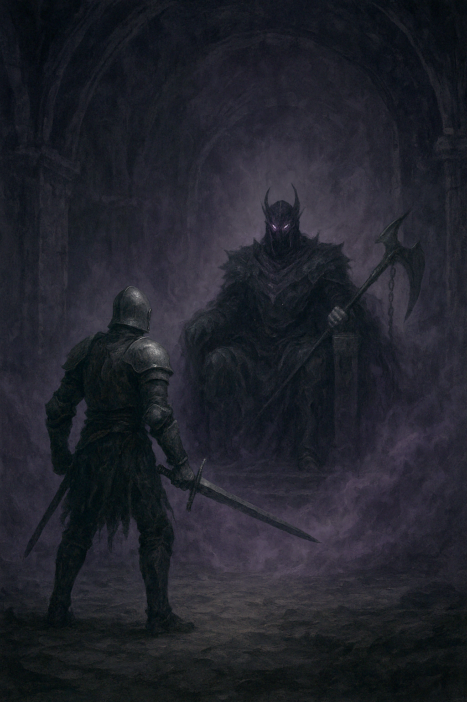

Les portes de la salle du trône se referment derrière Alaric dans un grondement sourd. Une obscurité épaisse recouvre les murs, comme si la pierre elle-même refusait de réfléchir la lumière. Au centre, une silhouette immobile trône sur un siège d’obsidienne. Lentement, le Seigneur des Ombres relève la tête. Deux yeux d’un violet brûlant transpercent le brouillard, dévorant Alaric du regard.
« Ainsi… le petit chevalier a survécu à mes gardes »
Sa voix est un murmure, mais chaque mot résonne comme une cloche funèbre. Alaric avance d’un pas. Son cœur tambourine, mais sa lame ne tremble pas.
« Je suis venu mettre fin à ton règne, tyran. Les terres du Val d’Ombregivre réclament justice. »
Le seigneur sombre se lève. Son armure, tissée d’ombre et de métal, fume d’une énergie malsaine. Les chaînes gravées sur ses avant-bras tintent doucement, comme des os.
« Justice ? »
Un rire grinçant éclate, se répercutant dans la salle.
« Tu ne comprends rien, enfant. Je ne règne pas sur les ténèbres… ce sont les ténèbres qui règnent sur moi. »
Une pression étouffante envahit la pièce. Des fragments d’ombre se détachent du corps du seigneur maléfique, flottant comme des cendres vivantes. Alaric lève son épée, le souffle court.
« Alors je trancherai l’ombre elle-même. »
Le Seigneur des Ombres étend un bras. Sa hallebarde spectrale naît dans un déchirement de brume. La confrontation va enfin débuter...